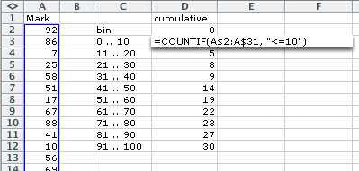

Frequency tables in Excel
The first step towards drawing a histogram is to create a frequency table for your marks.
In Excel, firstly enter your marks into one column then type details of the bins that you intend to use in a second column.
Next, type a formula to evaluate the number of values in the first bin, as shown below. (The formula counts the number of marks in the spreadsheet cells A2 to A31 that are less than or equal to 10.)

Copy this formula down in the spreadsheed (Edit > Fill down) then edit each formula to change the strings to "<=20", "<=30", etc.
The resulting values are the cumulative counts for the data -- each entry is the count for that bin plus the counts for lower bins. To obtain the counts in the individual bins:
- Type a zero in the cell above the top cumulative count.
- Type a formula in the next column for the first bin to evaluate the difference between it and the count above.
- Copy this formula down in the spreadsheet (Edit > Fill down).
This is a frequency table for your marks.
Drawing the histogram in Excel
Excel does not have a specific chart type for histograms, but it is possible to draw one with a bit of effort. Firstly drag over your column of frequencies then use the command Insert > Chart... to select the following chart type.

The next page of the Chart Wizard should show a draft (poorly drawn) histogram for your marks. Select the Series tab then specify the labels that should be used under your histogram bins.
On the next page, click on the Titles tab and type names for the two axes of your histogram (probably "Frequency" and "Mark"). You will probably also want to remove the Label. Now click Finish.
One final modification is required. The histogram rectangles must be widened to touch — it is incorrect to display them as distinct bars. Double-click one of the histogram bars. In the resulting dialog box, click the Options tab then set the gap between the bars to zero.
The resulting histogram is not perfect. The horizontal axis is not well labeled -- it would be better if the axis was labeled as a conventional numerical axis, rather than having a label attached to each bin. However this is the best that Excel can do.
You may also have noticed that the first bin contains one more possible values than the other bins — it can take 0, 1, ..., 10 which is eleven values. The only fix for this would be to create an extra bin for values -9, -8, ..., -1 and 0. However since Excel's 'histogram' is drawn with all rectangles the same width (irrespective of the range of values that may be included in it), this is less of a problem than if you drew the histogram by hand!